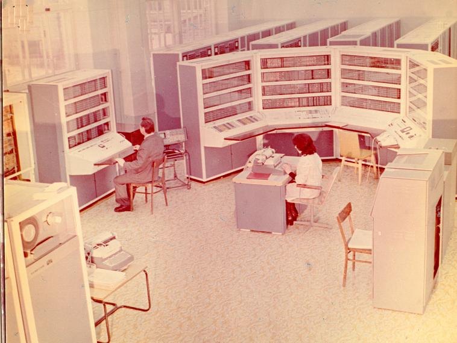
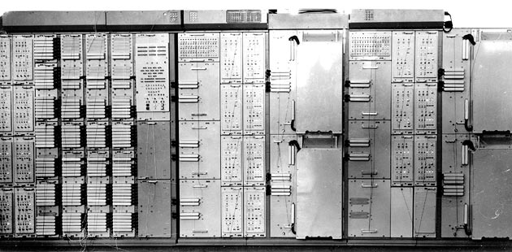

http://malchish.org/index.php?option=com_content&task=view&id=332&Itemid=35
Максон
Воображариум науки
У современной науки есть один важный недостаток - это очень "финансовоёмкий" продукт. Хотя у неё есть отдельные области, которые, в общем-то, не требуют особых затрат. Мозг и ручка. Вроде какой-нибудь лингвистики. Математика, в своих особо теоретических ипостасях, тоже не требует большего. Философия... Но в основной своей массе, той, что задаёт высочайший темп развития современной цивилизации, наука представляет собой весьма затратную область деятельности человека. Физика, изучающая основы строения вселенной, материю и законы её движения, сейчас требует создания очень дорогих экспериментальных устройств. Ставший уже известным даже журналистам Большой Адронный Коллайдер - БАК (это огромный ускоритель заряженных частиц, имеющий 27 км в диаметре) потребовал 1,5 млрд евро на своё строительство. ITER - экспериментальный термоядерный реактор, строительство которого только начинается, потребует ещё больше - 4,6 млрд евро, а эксперименты на нём в течении 20 лет потребуют примерно ту же сумму.
Представим себе на минутку, что этих денег правительства многих стран не выделили. Это значит, что не будет тех открытий, которые будут связаны с экспериментами на этих установках. Физика начнёт топтаться на месте. По крайней мере в области физики высоких энергий и физики плазмы. Другие науки хотя и менее требовательны к научному оборудованию, но тоже не сильно отстают в своих финансовых затратах.
К чему я веду? К простой мысли: наука развивается там, где в неё вкладывают деньги. И там, где вкладывают больше, там она быстрее и развивается. Тем самым наука становится зависима от политической элиты, распределяющей финансовые потоки, даже если сами учёные представляют собой очень свободное и независимое сообщество. Болтать-то они могут о чём угодно, но открытий великих уже не сделают. Времена не те. Это Ньютону для открытия всемирного тяготения понадобилось одно яблоко. Кроме собственной головы, конечно. Нынешним физикам сотен голов и вагона яблок не хватит, чтобы добыть хоть сколько-нибудь ценный научный факт. И в условиях финансовой зависимости наука превратилась в довольно жёсткую бюрократическую систему - в ней появились свои чиновники, распределяющие финансовые средства между отдельными группами исследователей. Эти средства тоже не просто так появляются. Есть боязнь войны - правительство выделяет ресурсы на создание ядерной бомбы. Есть боязнь энергетического коллапса - деньги идут на создание термоядерного реактора. При этом страдают те области науки, которые хотя и близки к важным для человечества открытиям, но в силу утверждённой политики расходования средств остаются без необходимого для этого финансирования. Таким образом, наука в своём развитии движется не совсем естественным путём - от открытия к открытию. Есть чётко выделенное направление, задаваемое политическим истеблишментом, политической и экономической ситуацией.
Однако реально дело обстоит ещё сложнее. В процесс развития вмешиваются ещё и узкоклановые интересы внутри политической элиты. Этим кланам не всегда выгоден научный прогресс в конкретной области. Разве будет выгоден вечный двигатель нефтяным магнатам? Они держат весь мир за горло и вдруг бац - вечный двигатель! Нефть стала нужна только в виде полиэтилена для упаковок. Им это надо? Им это не надо. И тут можно кое-что напомнить. 44-ый президент США Джордж Буш-младший в 1978-84 гг. руководил нефтяной компанией "Arbusto Energy/Bush Exploration", а в 1986-90 гг. - руководит нефтяной компании "Harken". Вице-президент Дик Чейни (Dick Cheney) в 1995-2000 гг. - руководитель нефтяной компании "Halliburton". Кондолиза Райс (Condoleezza Rice) в 1991-2000 гг. - руководитель нефтяной компании "Chevron", которая назвала её именем нефтяной танкер. Автобиография старшего Буша - Джорджа Герберта Уокера Буша, 41-го президента США также включает организацию и владение нефтяной компанией. А ведь он был ещё и директором ЦРУ... Интересы бизнеса власть имущих очень часто не совпадают с интересами науки. Наука может обесценить их уже накопленные активы. И можно с уверенностью предположить, что изобретателю вечного двигателя, будь он вдруг изобретён, грозит немалая опасность. Да даже и не вечного, а любого, но работающего на чём-нибудь дешевле нефти. Работы по созданию чего-то похожего и несущего опасность нефтяному бизнесу прикроют на самой начальной стадии. Конфликт интересов политической элиты с логикой научного прогресса не является гипотезой. Это очевидный факт и интересы нефтяного бизнеса тут служат лишь мелким частным примером. В жизни всё ещё серьёзнее. Некоторые известные научно-технические достижения могут оказаться лишь ловким мошенничеством, выполненным в чисто политических целях.
Статья Станислава Георгиевича Покровского (физика, кандидата технических наук) под названием "Остановка научно-технической революции" значительно дополняет подобные рассуждения и даёт много подтверждающего фактического материала. Даже по части сомнений в реальности американского визита на Луну, хотя этой скандальной темы автор коснулся мимоходом. Более подробно об этом он писал в других статьях, и его доводы неплохо дополняют книгу доктора физико-математических наук А.И. Попова «Американцы на Луне. Великий прорыв или космическая афера?». Вместе с книгой Юрия Мухина "Лунная афера США" и серией статей Аркадия Велюрова "Пепелацы летят на Луну" они создают практически исчерпывающий доказательный материал того, что полёты "Аполлонов" были лишь мистификацией мирового масштаба. Более того, политическое руководство СССР знало о ней и участвовало в сокрытии правды. Как такое было возможно? Статья Покровского вскрывает и возможные тайные пружины такого сговора.
Если вкратце изложить основные тезисы статьи, то получим следующие утверждения.
- С самого рождения СССР наука рассматривается большевистским правительством в качестве важнейшего института социализма, властного института. Наука в советском обществе становится важнейшей ветвью власти и это обусловило успех индустриализации страны, высочайшие темпы развития экономики.
- Партийный и советский аппарат, который в 30-е годы все-таки через коммунистов нижнего, деятельного звена демонстрировал собственную необходимость, попросту преодолевая классовое сопротивление, погибая под пулями кулаков, подавая пример трудовой дисциплины, самоотречения, - к 1960-м стал свадебным генералом, абсолютно лишним звеном управления. Этого пока не понимала творческая интеллигенция, но начинал понимать сам партийный аппарат.
- Аналогичные процессы шли и в США, где подъём экономики и развитие техники обусловило появление "золотых воротничков" - младшего научно-инженерного персонала и представителей интеллектуальных рабочих профессий. В 60-е этот слой был уже вполне зримым и политически активным, а к 1968 году США стояли на пороге революции на волне протестов против войны во Вьетнаме.
- Две общественные группировки в двух странах с противоположным общественным строем - оказались перед лицом одной и той же опасности потери своего «избранного» места над обществом...
- В 60-е годы советский проект доминировал в предпочтениях народов мира. Это был период наступления коммунизма на всех фронтах. Противодействие этому наступлению в сфере реального военно-технического и экономического противостояния, как вынужден был признать государственный советник США Генри Киссинджер, - было бесперспективным. Противопоставить наступлению коммунизма можно было только политические методы.
- Для остановки наступления коммунизма нужно было прежде всего остановить советскую науку. В этом оказался заинтересован и партийный аппарат в СССР.
В статье много конкретных примеров:
"Прежде всего это коснулось выбора самостоятельного пути развития отраслью электроники и вычислительной техники. Место этим отраслям было определено - в затылок за американцами. Постепенно тенденция вторичности была распространена на всю науку. Новое, говоришь? А что-то похожее американцы делают? Не делают - ну и не лезь со своей заумью. Буржуи деньги считать умеют, если они в это дело не суются, следовательно, оно бесперспективно... "
Поскольку я работал в научном институте начиная с 1985, сразу после окончания физического факультета университета, то всё это мне знакомо на собственном опыте. Я занимался именно электроникой и мне, как молодому стажёру-исследователю, было совершенно не понятна идеология копирования, утвердившаяся в ней. Копировали каждую микросхему! Старательно добивались сходства характеристик, причём иногда даже делали их лучше. Всё это диктовалось необходимостью копирования конечного продукта - компьютеров, процессорных плат, где эти микросхемы служили элементами. И это при том, что в 60-е годы мы совершенно не отставали в собственных разработках! Моя мама работала программистом на вычислительном центре, где стояла советская ЭВМ "Минск-22". Пятиклассником я приходил к ней на работу и с восхищением смотрел на шкафы, сверкающие разноцветными лампочками, на перфокарты и перфоленты с программами. Огромный пульт управления напоминал мне кабину звездолёта. По нынешним меркам вычислительная мощность той машины не превышала мощности современного калькулятора, но и на западе тогда не было лучше! Потом были Минск-32, М-5000...
Последним по настоящему серийным и самостоятельным продуктом отечественной электроники была наверное ЭВМ "БЭСМ-6". Разработка машины БЭСМ-6, главный конструктором которой был академик С.А.Лебедев, была закончена в конце 1966 г. Это была первая в мире ЭВМ с конвейерной архитектурой процессора. Машина вступила в строй в 1967 г. Выполняющая около 1 млн. арифметических операций в секунду, она была выполнена на полупроводниках, на элементной базе, допускающей высокую частоту переключений (основная тактовая частота - 10 Мгц). По своим характеристикам и архитектуре машина БЭСМ-6 вполне может быть отнесена к машинам уже 3-го поколения (то есть на микросхемах), хотя она и была на дискретных "навесных" деталях - транзисторах, т. е. на технологической основе машин второго поколения. Эта машина имела рекордное быстродействие на момент своего создания! На ней считали всё. От школьных "2х2" до взрывов ядерных бомб. Она не зависала никогда. Она работала и днём, и ночью. Двадцать лет. Её выпуск был прекращён лишь в 1986 году, когда весь потенциал производительности был наконец исчерпан и не мог идти в сравнение с новичками, сделанными на интегральных схемах. Всего было произведено 355 машин.

БЭСМ-6. Непризнанный чемпион компьютерной индустрии.
В современных справочниках часто указывают, что БЭСМ-6 уступала американской CDC-6600, созданной почти одновременно с ней в 1966 году известным американским изобретателем суперкомпьютеров Сеймуром Креем (Seymour Cray) и имевшей производительность якобы до 3 млн операций в секунду. Однако данное первенство американцев весьма спорное - при равных тактовых частотах процессоров в 10 МГц машины значительно отличались архитектурно и БЭСМ-6 тут вовсе не была аутсайдером. Центральный процессор БЭСМ-6 имел конвейер, позволяющий совмещать выполнение различных стадий операций на одном такте процессора. Это увеличивало производительность системы в число стадий конвейера. Американская же CDC-6600 не имела конвейер, зато некоторые логические элементы процессора были выполнены независимо и теоретически могли выполнять операции одновременно. Этих элементов было 10 и потому в характеристиках указывалась пиковая производительность в 10 раз выше, чем это было достижимо на практике. Более честно американцы указывают производительность машины CDC-6400 - более дешёвого варианта 6600 без параллельных модулей в центральном процессоре - 200 kFLOPS (200 тысяч операций с плавающей точкой в секунду).
Американцы очень энергично отстаивают своё первенство в вычислительной технике и не стесняются привирать. Даже Википедия транслирует их враньё по поводу того, что БЭСМ-6 повторяла архитектуру CDC-1604, более старой разработки Сеймура Крея. Основой вранья послужило лишь то, что у БЭСМ-6 и CDC-1604 совпадала разрядность данных и команд и то, что некоторые прикладные программы, разработанные в международном исследовательском ядерном центре ЦЕРН, были перенесены с CDC-1604 на БЭСМ-6 специалистами советского института ядерных исследований ОИЯИ. Это враньё особенно смешно сейчас, когда 32-разрядный формат команд и данных стал де-факто стандартом, а процессоры разных фирм AMD и Intel, имея различные архитектуры, являются при этом совместимыми даже по системе команд. Гораздо более правдоподобным будет утверждение, что Сеймур Крей заимствовал принцип конвейера у БЭСМ-6, когда разрабатывал свою следующую машину - CDC-7600. Именно эта машина, созданная двумя годами позже БЭСМ-6, обладала аналогичной БЭСМ-6 конвейерной организацией процессора и могла соперничать с БЭСМ-6 по производительности.
БЭСМ-6, непризнанный историей лидер компьютерной индустрии, имела рекордное быстродействие и обладала совершенно оригинальной архитектурой. Однако в год выхода БЭСМ-6 в эксплуатацию, 30 декабря 1967 года, ЦК и Совмин выпустили совместное постановление о разработке Единой Серии Электронных Вычислительных Машин. Это было уникальное постановление – впервые на таком высоком уровне решалась судьба дальнейшего развития вычислительной техники в стране. Был создан Научно-исследовательский центр электронной вычислительной техники (НИЦЭВТ), под его началом объединились и другие организации. И вопрос о том, какой должна быть единая серия программно-совместимых машин различного быстродействия решился вдруг в пользу копирования американских компьютеров. В 1968 году Минрадиопром начал работы по воспроизведению архитектуры программно совместимого семейства IBM 360. В декабре 1969 года этот вариант был утверждён окончательно. Интересно, что это произошло почти сразу после финала лунной гонки - "Аполлон-11" стартовал с космодрома НАСА на мысе Кеннеди 16 июля 1969 года. То что вместо линейки БЭСМ начали выпускать IBM-360 было шагом назад - ни один из компьютеров IBM тогда не превосходил БЭСМ по производительности. Одним из аргументов служило тогда мнение, что вместе с копированием компьютеров мы получим бесплатно его программное обеспечение, которое у IBM было довольно богатым. Однако и программное обеспечение БЭСМ не слишком ему уступало - имелись компиляторы Фортран, Алгол, Автокод МАДЛЕН, интерпретатор Лисп. Можно было использовать языки Симула, Аналитик, Аква, Сибэсм-6, метаязык R-грамматик. Кто сейчас вспомнит о таких языках? Мы поставили крест не только на разработке оригинальной вычислительной техники, но и на собственных языках программирования, на своих операционных системах. Мы сдали всю отрасль целиком. Мнение известного теоретика программирования Э.Дейкстры о данном решении советского правительства звучало так - "это величайшая победа Запада в холодной войне".
После введения системы копирования американских образцов и появления серии машин ЕС - копий американской IBM360/IBM370, собственные разработки СССР в области вычислительной техники всё же не прекратились. Однако они почти полностью ушли в рамки военных проектов - военные не желали использовать лишь копии, да ещё хуже собственных разработок. Импорт же их не устраивал по причине возможных "закладок" - недокументированных особенностей электроники, способных вывести электронику из строя в интересах вероятного противника. ИТМ и ВТ, директором которого был академик Лебедев, хотя и продолжал числится академическим институтом, стал по существу военным ведомством и там продолжались работы в направлении совершенствования БЭСМ-6 и военных М-40, М-50. Результатом таких работ стала линейка "Эльбрусов", основными задачами которой были задачи для системы противоракетной обороны. Сначала на элементной базе от военных ЭВМ 5Э261 и 5Э262 был создан многопроцессорный вычислительный комплекс «Эльбрус-1» производительностью 15 млн. операций/с. На втором этапе был создан МВК "Эльбрус-2" производительностью 120 млн. операций/с. "Эльбрус-3", разработка которого завершилась к концу 80-х годов имел производительность уже 500 MFLOPS (миллионов операций с плавающей точкой в секунду).
Показатели производительности для ЭВМ - вещь очень относительная, зависящая как от архитектурных особенностей, так и от эффективности компиляторов с языков программирования. Поэтому для сравнения реальных показателей производительности часто используются тестовые программы. В 1988 г. С. В. Калин измерил производительность ЦП МВК “Эльбрус-2” на 24 "ливерморских циклах" и по результатам этих тестов среднее гармоническое значение производительности составило 2,7 MFLOPS. Для сравнения аналогичный показатель у процессора Cray-X МР (наиболее известная разработка Сеймура Крея 1982 года) — 9,3 MFLOPS (при тактовой частоте, в 5 раз превышающей тактовую частоту МВК “Эльбрус-2”). Такое соотношение говорит о высокой эффективности архитектуры "Эльбрусов", позволяющей делать больше операций за один такт процессора.
Архитектура процессоров "Эльбрус" уже значительно отличалась от старой БЭСМ-6 и сильно отличалась от традиционной. Ядром "Эльбруса 3-1" был модульный конвейерный процессор (МКП), сконструированный Андреем Андреевичем Соколовым. Соколов был участником всех наиболее значимых проектов лебедевского института, от БЭСМ-1 до АС-6. И именно инженерный талант Соколова коллеги часто сравнивали с талантом Сеймура Крея - постоянным соперником Лебедева в соревновании по сверхскоростным вычислениям. "МКП представлял собой мощный процессор, способный обрабатывать два независимых потока команд. Конвейерные устройства процессора работали с двумя типами объектов — векторами и скалярами. Скаляры как бы вклинивались в векторный конвейер и обрабатывались между двумя соседними компонентами вектора. Несколько каналов доступа обеспечивали до 8 параллельных обращений к памяти за один такт." Практически все архитектурные черты "Эльбрусов" были абсолютно оригинальны, но и их часто называют заимствованием принципов от фирм CDC и Burroughs, что является очевидным враньём. Как конвейер, так и принципы параллельных вычислений Лебедев начал использовать раньше.
Лебедевский институт и сейчас остаётся на высоте, пройдя эпоху ельцинизма хоть и со значительными потерями, но не утратив творческого потенциала. Правда в новой ипостаси - в апреле 1992 года на базе отделений Института точной механики и вычислительной техники имени С.А.Лебедева был создан ЗАО "МЦСТ", продолживший развитие архитектуры "Эльбрусов". В том году один из ведущих сотрудников института Б.А. Бабаян и большая часть специалистов МЦСТ были наняты гигантской корпорацией Intel для работы в её российском филиале. Это может показаться смешным, но именно корпорация Intel тогда позволила сохранить отечественные кадры в электронике, позаимствовав, конечно, и значительные наработки института вместе с частью персонала. На основе архитектуры МВК "Эльбрус" специалистами новой фирмы в 2007 году создан микропроцессор "Эльбрус", который послужил основой вычислительных комплексов «Эльбрус-3М1», с тактовой частотой 300 МГц и производительностью 4.8 GFLOPS (для сравнения - у Intel Core2Duo 2.4ГГц всего 1.3 гигафлопса). При этом российский микропроцессор даже не требует радиатора для охлаждения. Двухпроцессорный вариант вычислительного комплекса, названный УВК/С имеет пиковую производительность 19 GFLOPS (для 32-разрядных данных). Это ответ тем, кто думает, что нашим военным приходится сегодня использовать персоналки от IBM c микропроцессорами от Intel. К счастью это не так. Хотя для этого и пришлось закупать импортное оборудование для производства микросхем.
Системный модуль с двумя микропроцессорами "Эльбрус" и вычислительный комплекс «Эльбрус-3М1»:

Микропроцессор выполнен по технологии 0,13 мкм, что не является на сегодня технологическим рекордом, но и не сильно отстаёт от них (технология считалась новинкой около 5 лет назад). Сейчас ведётся разработка микропроцессора "Эльбрус-S" на технологии 0,09 мкм, который представляет собой уже "систему на кристалле", то есть включает в себя контроллеры периферийного оборудования. Он предназначен для создания высокопроизводительных одноплатных ЭВМ для "носимых и встроенных" применений, что означает, что наши самолёты и ракеты не будут оснащаться импортными компонентами.
Но вернёмся в 60-е годы. СССР тогда был первым по очень многим техническим разработкам в области электроники, большинство из которых проводились в рамках военных проектов и потому были секретными. И ввиду секретности эти достижения остались за пределами внимания историков. Создатель БЭСМ-6, выдающийся советский конструктор вычислительной техники Сергей Алексеевич Лебедев, конструировал и сугубо военные ЭВМ — для первой, ещё экспериментальной системы противоракетной обороны (ПРО):
Достижения СССР в вычислительной технике имели серьёзнейшее значение для обороны и послужили важным аргументом для заключения договора по ограничению ПРО. Причём именно тогда, когда мы имели в этом значительное преимущество. СССР практически уже имел свою противоракетную оборону к середине 60-х годов, когда США могли об этом только мечтать. Договор ограничивал прежде всего СССР, а не США - в результате договора система ПРО была развёрнута только вокруг Москвы. Когда США наконец смогли что-то сделать в этой области (это спустя 30 лет!), они тут же вышли из договора. Спрашивается - а был ли вообще смысл для СССР подписывать такой договор? Мы отказались от щита ПРО ничего не получив взамен! США просто не могли тогда создать свой. Знало ли об этом руководство СССР? Если знало, то договор по ПРО уже можно считать актом предательства интересов страны. Ситуация очень напоминает 1987 год, когда Советский Союз был готов вывести на орбиту компоненты уже космической ПРО - спутники с лазерным оружием "СКИФ". Тогда Горбачёв, убедившись в возможном успехе программы, тут же наложил на неё односторонний мораторий, объявив с трибуны ООН об отказе СССР от "гонки вооружений в космосе". США планирует вывод аналогичных спутников на орбиту только в 2012 году, спустя 25 лет после закрытия советской аналогичной программы. Не потому, что у них вдруг появилось такое желание. Потому что их технологии, не без помощи российских специалистов, только сейчас это позволили. Почему руководство СССР шло на односторонние уступки? Официальной версии ответа на такой вопрос не существует.
Ещё в начале 60-х наши компьютеры успевали рассчитывать траектории баллистических ракет при том, что первоначально наша система ПРО работала на довольно медленных ЭВМ. Машины М-40 и М-50 имели производительность лишь 40 тысяч и 50 тысяч операций в секунду соответственно. Однако 5Э92б - военная модификация М-50, имела производительность уже 500 тыс операций в секунду, что для 1966 года, с которого началось её производство, было близко к мировому рекорду, если не являлось им. И тут есть ещё одна малоизвестная деталь.
Среди множества часто упоминавшихся советских моделей ЭВМ редко встречаются названия очень важной серии компьютеров, выпускавшихся во второй половине 60-х - начале 70-х годов и целиком уходившей на комплектование ВС СССР. Это машины серии "5Э" (5Э51, 5Э92б и т.д.), разработанные КБ Лебедева. БЭСМ-6 широко известна, но мало кто знает, что БЭСМ-6 стала известной только потому, что проиграла тендер на поставки для Вооружённых сил СССР, - тендер, на котором победила "5Э". Военные, остановив свой выбор на "5Э", как бы "забраковали" БЭСМ-6 и последняя пошла в открытое распространение для гражданских отраслей. А серия "5Э" была засекречена и отгружалась только военным. Машины серии "5Э" объединялись каналами "межмашобмена" в локальные сети, которые в первой половине 70-х годов составляли многопроцессорную вычислительную среду, как основу систем контроля космического пространства и управления космическими объектами. Собранные вместе в такую вычислительную среду несколько ЭВМ составляли единый вычислительный комплекс, который имел в разы большую производительность, чем БЭСМ-6. Этот же принцип сейчас служит основой создания современных суперкомпьютеров - это отдельные процессоры, собранные в единую сеть каналами быстрой связи. А для этого необходимы специальные средства. Ещё машины серии «М» (М-40, М-50) имели развитую систему прерываний, могли осуществлять приём и передачу данных по семи дуплексным асинхронно работающим каналам с общей пропускной способностью в 1 Мбит/с. Модификация М-50 - 5Э92 была специально рассчитана на применение в подобных комплексах обработки данных.
"Система А" - это система противо-ракетной обороны. Работы по теме ПРО (системе «А») сыграли огромную роль в развитии вычислительной техники в СССР: по заказам военных, используя относительно медленную элементную базу, специалисты КБ Лебедева (ИТМиВТ) создали вычислительные средства, превосходящие по своим параметрам зарубежные. Ими были созданы и мобильные варианты подобных систем, например 5Э261 - мобильная многопроцессорная высокопроизводительная управляющая система, построенная по модульному принципу. Именно она была использована в составе систем ПВО С-300ПТ сухопутного и морского базирования:

Но что самое важное - были созданы средства сопряжения отдельных компьютеров в вычислительную среду - быстрые асинхронные мультиплексные каналы связи и соответствующее программное обеспечение. И тут мы подходим к ещё одному важнейшему для страны проекту, системе ОГАС - "Общегосударственной автоматизированной системы учёта и обработки информации", системе автоматизированного управления экономикой в СССР, основанной на принципах кибернетики. Эта система, разработанная академиком Виктором Михайловичем Глушковым базировалась именно на таких технических средствах.
ОГАС - легенда о несбывшемся грядущем. Сейчас стало модным исследовать альтернативные варианты истории. Появился даже особый литературный жанр – альтернативная история, которая пытается моделировать реальность при каких-то иных ключевых событиях. Что было бы, если бы во второй мировой войне победила нацистская Германия? Что было бы, если бы к власти в СССР после Ленина пришёл не Сталин, а Троцкий? Есть фантазии и по поводу развала СССР в 1991 году. К власти после Черненко мог придти не Горбачёв, а кто-то другой, и СССР мог бы без «перестройки» продолжать жить в «застое» или даже совершить очередную «индустриализацию» или «модернизацию». Есть и такой сюжет, причём даже не в литературе, а в виде рок-оперы композитора Виктора Аргонова под названием «2032: Легенда о несбывшемся грядущем». В этом сюжете СССР в 1991 году не развалился, а наоборот, укрепился. Вследствие того, что в 1985 году после Черненко к власти приходит не М. С. Горбачёв, а Г. В. Романов – другой член Политбюро. История идёт иным путём, и этот путь оказывается успешным до некоторого очередного излома, который и стал основой сюжета.
В 2000-х годах по сюжету рок-оперы Романова сменяет Н. И. Плотников — академик, талантливый учёный, создатель важнейшего для страны проекта АСГУ - автоматической системы государственного управления. Использование достижений кибернетики повышает эффективность управления экономикой, СССР быстро развивается и даже расширяет территорию – присоединяет Монголию и Южный Афганистан. Но в 2032 году, к которому относится основной сюжет, при новом генсеке А. С. Милиневским, АСГУ вступает в идеологические расхождения с традиционной точкой зрения на коммунизм как общество коллективного труда на общее благо. Она предлагает другой путь к отмене товарных отношений — перевод автоматизированных производственных мощностей под свой полный контроль, что должно освободить экономику от необходимости товарного обмена, ещё более повысить её эффективность и, в конечном итоге, освободить человека от производительного труда вообще.
Данная идея показалась опасной руководству страны сразу с трёх точек зрения. Во-первых, с этической стороны - есть опасность превращения населения в потребителей и тунеядцев. Во-вторых, с политической - бюрократия боится потери власти. И, наконец, есть также страх воплощения уже известных антиутопий с порабощением людей искусственным разумом. АСГУ, по сюжету, обладает искусственным интеллектом и даже поёт в опере чистым девичьим голосом. В результате конфликта машина подвергается перепрограммированию, в неё внедряют обязательность доктрины всеобщего труда, однако это лишь снижает эффективность государственного управления. Более того, в результате действий АСГУ (а также неуравновешенного характера генсека, влюбившегося в школьницу) развязывается война и наступает ядерный апокалипсис. В итоге сюжет заканчивается трагично и выходит, что Горбачёв помог нам избежать ужасного конца…
Такое странное развитие сюжета вызывает, конечно, ряд вопросов, причём как идеологического, так и чисто логического характера. Тем не менее, сюжет, в общем, очень интересен и обсуждает важнейшие проблемы социалистической модели развития общества. Более того, ставит абсолютно правильные вопросы к самой идее коммунизма – как общество должно распорядиться своими растущими производительными возможностями – создать рай для потребителей, или как-то иначе? Однако эти теоретические вопросы мы обсуждать не будем, они выходят за рамки статьи. Есть момент, который лежит гораздо ближе к реальности и более соответствует теме – дело в том, что основной сюжет оперы по части АСГУ вовсе не фантастичен. В СССР уже в конце 1960–х встал вопрос об использовании подобной системы с похожим названием – ОГАС (Общегосударственная Автоматизированная Система учёта и обработки информации). И вопрос о её использовании решался именно в русле понимания тех проблем, что поставила АСГУ перед партийным правительством СССР в 2032 году по сюжету оперы. Сознательно или нет, но автор сюжета, по сути, повторяет реальную историю СССР.
Конечно система ОГАС, проект которой был предложен правительству академиком Виктором Михайловичем Глушковым ещё в 1964 году, не обладал искусственным интеллектом. Его суть была проще и не подразумевала абсолютно полной автоматизации управления страной. Ручек и кнопок для политической власти там вполне хватало. И всё же значительная часть управляющих функций автоматизировалась и определяла плановые показатели каждого конкретного производства. План, который прежде определял чиновничий аппарат. Чтобы понять суть предложений Глушкова необходимо сказать пару слов о самих принципах плановой экономики и связанных с ними проблемах.
Экономика СССР была плановой, что означало, как ни странно может показаться современному читателю, не тоталитаризм, а составление планов производства и их выполнение. Подобным планированием своей деятельности занимается любая более-менее крупная производственная компания в любой стране. При любом общественном строе. Если завод производит трактора, то для конвейера нужно поставлять детали всей номенклатуры в определённое время. Производство и поставку деталей на конвейер определяет план. Разница лишь в том, что в СССР планы составлялись в масштабе всей страны. Это был огромный конвейер, где каждый отдельный производитель был связан с другими множеством производственных связей. Причём так было с самого начала советской эпохи, с плана ГОЭЛРО по электрификации страны.
Поначалу планирование экономического развития было очень успешным – оно позволяло концентрировать усилия народа и ресурсы всей страны на самых важных направлениях, давая невиданные темпы развития. Так страна в самом первом этапе своего развития в короткие сроки построила множество электростанций, необходимых для индустриального развития. С этого этапа началась индустриализация страны. Уже во время первой пятилетки (1928-1932) были построены 1500 крупных предприятий, в том числе: автомобильные заводы в Москве (АЗЛК) и Нижнем Новгороде (ГАЗ), Магнитогорский и Кузнецкий металлургические комбинаты, Сталинградский и Харьковский тракторные заводы. Без электроэнергии они не могли бы работать, а без централизованного планирования не могли быть построены.
Обычным сроком для планирования была пятилетка, и съезды компартии были привязаны к этим периодам. По сути, правительство на этих съездах отчитывалось перед партией за выполнение намеченных планов по развитию экономики (только этот момент и говорит о вполне определённом тоталитаризме - диктатуре партийной бюрократии). Планирование работы страны-конвейера было делом тяжёлым, требовало обработки огромной массы экономической информации, но с нею в начале истории СССР всё же справлялись, пусть и с помощью простейших бухгалтерских счёт. Занимался анализом экономической информации и планированием важнейшее учреждение Советского Союза – Госплан (точное название организации менялось несколько раз от «Государственной общеплановой комиссии при Совете Труда и Обороны РСФСР» до «Государственного планового комитета СССР Совета Министров СССР»).
Пока номенклатура изделий страны-конвейера была не очень большая, такие планы можно было рассчитать с помощью бухгалтерских счетов. Проблемы начались, когда количество обрабатываемой информации превысила некую критическую величину. Так, по подсчётам экономистов в 1960-х годах номенклатура производимой продукции составляла уже до 20 млн видов и для управления народным хозяйством ежегодно нужно было совершать около десяти в шестнадцатой степени математических операций, то есть более десяти квадриллионов операций [3]. Не смотря на то, что к тому времени в научных учреждениях уже использовались ЭВМ, работа в Госплане была организована по старому – его отделы были снабжены лишь счётно-аналитическими машинами образца 1939 года, а люди занимались анализом и составлением планов. Причём планы эти имели лишь координационно-рекомендательный характер, основные решения принимали с их учётом профильные министерства и партийные органы. К этому времени стало очевидно, что Госплан уже с трудом выполняет возложенные на него задачи планирования. Пришлось даже сократить число показателей народно-хозяйственного плана:
Поэтому, когда в 1962 году президент Академии наук СССР М.В. Келдыш привёл к А.Н. Косыгину (бывшему тогда заместителем Председателя Совмина СССР) талантливого украинского инженера и учёного Виктора Михайловича Глушкова (руководителя Института Кибернетики АН УССР) с идеями автоматизации работы плановых органов, его предложения были приняты очень положительно. Вышло даже распоряжение Совета Министров СССР о создании специальной комиссии под председательством Глушкова по подготовке материалов для постановления правительства. Глушков очень энергично взялся за дело. Он провёл много времени, изучая работу ЦСУ (Центрального статистического Управления) и Госплана. Посетил около сотни различных предприятий и учреждений, изучая тонкости управления процессом производства. Результатом работы стала концепция создания сети вычислительных центров с удалённым доступом.
Первый эскизный проект Единой Государственной сети вычислительных центров (ЕГСВЦ) включал около 100 центров в крупных промышленных городах и центрах экономических районов, объединённых широкополосными каналами связи. Как описывал сам Глушков:
Глушковым были разработаны и математические модели управления экономикой. В проект была даже вложена система безденежных расчётов для населения (некий аналог современных банковских карточных систем), но академик Келдыш такое нововведение не одобрил, и её исключили из проекта. По этому поводу Глушков написал записку в ЦК КПСС, но та осталась без ответа. Тем не менее, в целом работа Глушкова была одобрена и в 1963 г. вышло Постановление ЦК КПСС и Совета Министров СССР, в котором была отмечена необходимость создания в стране Единой системы планирования и управления (ЕСПУ) и Государственной сети вычислительных центров.
По подсчётам Глушкова, на выполнение программы создания ОГАС в полном объёме требовалось три-четыре пятилетки и не менее 20 миллиардов рублей (сумма огромная, сравнимая с годовым военным бюджетом страны). По его мнению, создание такой системы планирования экономикой было сложнее и труднее, чем программы космических и ядерных исследований вместе взятые, к тому же затрагивало политические и общественные стороны жизни общества. Однако при умелой организации работ уже через пять лет затраты на ОГАС станут окупаться, а после ее реализации возможности экономики и благосостояние населения по меньшей мере удвоятся. Полное завершение работ по ОГАС он относил уже на 90-е годы. Такие расчёты не отпугнули руководство, уже испытавшее успех космических программ. Это была пора всеобщего энтузиазма и гигантских проектов, и деньги на строительство вычислительных центров были выделены. При этом, правда, проект претерпел значительные изменения. Как писал сам Глушков:
Таким образом, проект не был принят, доработку проекта поручили основному его противнику. Как тут не вспомнить и конец лунной программы – там «доработку» тоже поручили основному конкуренту Мишина – Глушко. Совершенно полная аналогия. Проект закрывается руками конкурента, при этом у принимавшего решение «руки остаются чистыми». Заметим также и то, что в обоих случаях старательно уничтожаются наработанные результаты – документация, техника. То есть уничтожается сама возможность продолжения работы в данном направлении. К таким примерам можно отнести и закрытие очень перспективного проекта сверхзвукового самолёта-ракетоносца Т-4 разработки ОКБ Сухого. Проект был закрыт в 1974 году при непосредственном участии конкурента - Туполева.
Тут надо отметить интересную деталь. В тот же год, когда Косыгин дал добро Глушкову на его проект, то есть ещё в 1962 году, в газете «Правда» была напечатана нашумевшая статья некого харьковского экономиста профессора Евсея Григорьевича Либермана под названием «План, прибыль, премия», в которой впервые предлагалось сделать главным критерием эффективности работы предприятия прибыль и рентабельность, то есть отношение прибыли к основным и нормируемым оборотным фондам. В последующих статьях Либермана под кричащими заголовками («Откройте сейф с алмазами» и др.) эта идея получила дальнейшее развитие. Перед этим в "Правде" в целях популяризации своих идей опубликовал статью и Глушков. Таким образом, статья Либермана прозвучала как ответ Глушкову. К мнению Либермана присоединилась целая компания экономистов. И в том же 1962 году Хрущёв дал добро на проведение хозяйственного эксперимента в духе концепции Либермана. Для его проведения были выбраны два предприятия швейной промышленности (фабрики «Большевичка» в Москве и «Маяк» в Горьком), Западный угольный бассейн на Украине, а также ряд транспортных предприятий. Косыгин, будучи заместителем председателя Совета Министров СССР и председателем Госплана, долго сопротивлялся проведению реформы по Либерману. Однако после Октябрьского (1964 г.) Пленума ЦК КПСС, который снял Хрущёва со всех постов, Косыгин стал председателем Совета Министров СССР и вскоре приступил к проведению этой реформы.
Иначе говоря, в эти годы (1962-1964) партийное руководство страны было на распутье между двумя принципиально разными путями реформы управления страной. И выбран был рыночный метод. Проект ОГАС стал жертвой этого выбора.
Ссылки:
[1].
Григорий Ханин. "50-е годы - десятилетие триумфа советской экономики".
[2]. Б.Н. Малиновский.
"История вычислительной техники в лицах."
[3]. Глушков В.М., Валах
В.Я. "Что такое ОГАС?"
Проект ОГАС не был единственным примером в истории, когда достижения науки, прежде всего кибернетики, пытались использовать в управлении экономикой страны. И, конечно, такие эксперименты были возможны только в социалистических странах, где рынок контролировался государством в той или иной степени. Второй страной, где была проведена подобная попытка стала Чили. И на этот раз по инициативе и при полной поддержке правительства. В 1970 году к власти в этой стране путём демократических выборов пришли социалисты. Лидер Социалистической партии Чили Сальвадор Альенде стал её 29-м президентом. Придя к власти в капиталистической стране Альенде начал проводить социалистические реформы - были национализированы все крупнейшие частные компании, банки. Была проведена земельная реформа, в результате которой около 40% сельскохозяйственных земель, находящихся в частном владении были экспроприированы. За первые два года деятельности правительства Альенде (Народного единства) к реорганизованному сектору сельского хозяйства было присоединено около 3500 поместий общей площадью 500 тыс. гектаров земли, что составило примерно четверть от всех обрабатываемых земель.
Как и в годы коллективизации в СССР, такая политика встретила сопротивление крупных собственников-латифундистов, теряющих свою собственность. Крупные скотоводы начали забивать скот или уводить стада в соседнюю Аргентину. Так Скотоводческая Ассоциация Огненной Земли до того, как её гигантские имения были экспроприированы, забила 130 тыс. стельных коров и отправила на скотобойни ещё 360 тыс. тёлок. Было подсчитано, что забой овец составил 330 тыс. Всё это повлекло за собой значительные проблемы с продовольствием. Тем не менее у правительства Альенде были очень серьёзные успехи - за два года правительство создало 260 тыс. новых рабочих мест, что привело к сокращению безработицы только в районе Большого Сантьяго с 8,3 % в декабре 1970 года до 3,6 % в декабре 1972 года. В 1971 г. валовой национальный продукт (ВНП) вырос на 8,5%, в том числе промышленное производство – на 12% и сельскохозяйственное производство – почти на 6%. Особенно бурными темпами развивалось жилищное строительство. Объем строительных работ в 1972 г. вырос в 3,5 раза. В 1972 г. ВНП вырос на 5%. Замедление роста объяснялось тем, что в ответ на национализацию имущества американских компаний в Чили (большей частью не конфискованного, а выкупленного) США приняли экстренные меры по подрыву чилийской экономики – выбросили на мировой рынок по демпинговым ценам часть своего стратегического запаса меди и молибдена, лишив таким образом Чили основного источника экспортных доходов (от одного только демпинга меди Чили в первый же месяц потеряла 160 млн долларов).
Под давлением США многие страны оборвали экономические связи с Чили, страна переживала сильнейшую экономическую блокаду. Что удивительно, к этой блокаде присоединился и СССР (это очень важно отметить), то есть блокада стала полной. С весны 1973 г. в Чили начался экономический застой, быстро переходящий в кризис. Это стало результатом откровенной кампании дестабилизации, инициированной США. В марте, после поражения противников Альенде на парламентских выборах, кризис усугубился вялотекущей гражданской войной, организованной ультраправыми. В день в Чили происходило до 30 терактов, фашисты из «Патриа и либертад» неоднократно взрывали ЛЭП, мосты на Панамериканском шоссе и на железной дороге, идущей вдоль всего побережья Чили, что лишало электроэнергии и подвоза целые провинции. Урон экономике Чили от терактов фашистов и спровоцированных из США забастовках был огромен. Например, 13 августа 1973 г. фашисты провели полтора десятка взрывов на ЛЭП и электроподстанциях, лишив электроэнергии (а в крупных городах и воды) 9 центральных провинций с населением 4 млн человек. Всего к августу 1973 г. ультраправые уничтожили свыше 200 мостов, шоссейных и железных дорог, нефтепроводов, электроподстанций, ЛЭП и других народнохозяйственных объектов общей стоимостью равной 32 % годового бюджета Чили.
Однако не смотря на хаос, организованный ультраправыми, правительство Альенде продолжало поддерживать до 80% населения (это признал даже лидер чилийских фашистов П. Родригес в прямом телеэфире). И если бы не предательство военных, примкнувших к ультраправым, то социалистам удалось бы удержать власть. 11 сентября 1973 года в столице был совершён военный переворот и во время штурма президентского дворца Альенде был расстрелян нападавшими. В последнем обращении к народу, уже под бомбами путчистов, Альенде заявил:
К сожалению, предательство генерала Пиночета очень надолго остановило социальный процесс в Чили. И не только социальный. В 2003 году, спустя 30 лет после переворота, британская газета "The Guardian" сообщила одну интереснейшую подробность переворота:
"Когда тридцать лет назад вооружённые силы Пиночета свергли чилийское правительство, они обнаружили коммуникационную систему революционеров - "социалистический интернет", опутавший всю страну. Его создатель? Эксцентричный учёный из Суррея." Речь шла об английском учёном Стаффорде Бире и его проекте "Киберсин" (Cybersyn). Стаффорд Бир - один из основателей управленческой кибернетики, создатель теории VSM - Viable System Model (модели жизнеспособных систем). Его теория базируется на представлении деятельности любого хозяйствующего экономического субъекта как живого организма и потому представляет собой квинтэссенцию целого ряда открытий в самых разных областях биологии, теории информации и кибернетике. Первое объяснение модели было предпринято в книге «Мозг фирмы». Фирма как жизнеспособная система была описана в виде нейрокибернетической модели, где строение и механизмы нервной системы человеческого организма стали прототипом модели управляющей структуры фирмы. Основу VSM составляет минимальный набор функциональных критериев, необходимых для эффективного автономного существования подобной "живой" системы. В модели Бира обеспечение данных критериев выполняется с помощью пяти подсистем, постоянно взаимодействующих для интеграции и находящихся в "гомеостазе" (то есть деятельность отдельных подсистем не выводит другие системы из баланса). Жизнеспособность такой социальной системы обусловлена динамикой её внутренней структуры, которая непрерывно обучается, адаптируется и эволюционирует. Интересно, что практически одновременно с Биром чилийские биологи Матурана и Варела сформулировали универсальную концепцию биологических форм жизни (аутопоэзис), которая подтвердила многие основополагающие принципы, лежащие в основе VSM.
Идеи Бира достаточно просты для понимания, но представляют собой весьма необычный подход в организации управления. Как писала "The Guardian":
"То, что предпринял Стаффорд Бир, по его же словам, стало "внедрением" электронной "нервной системы" в чилийское общество. Избиратели, рабочие места и правительство должны были быть соединены вместе новой, интерактивной национальной системой коммуникаций, которая преобразовала бы отношения между ними, сделала бы их более свободными, равноправными и ответственными чем ранее. Это был своего рода "социалистический интернет" придуманный за десятилетия до капиталистического аналога." Эти слова Бира про "свободные, равноправные отношения" не совсем соответствуют сути проекта. Скорее это некоторая дань лево-либеральной идеологии, которой придерживался учёный. Суть же проекта была в другом. Когда социалисты пришли к власти в Чили, то обнаружили, что под их руководством "сконцентрирована неорганизованная империя шахт и предприятий, некоторые из которых заняты самоорганизовавшимися рабочими, другие - все ещё контролируются старыми владельцами". И лишь немногие из них работают с полной отдачей. В июле, новый министр экономики в правительстве социалистов 29-летний Фернандо Флорес и его друг и старший советник Рауль Эспехо попросили Стаффорда Бира о помощи. Оба были знакомы с его трудами, поскольку компания Бира делала некоторую работу для чилийских железных дорог ещё до прихода Альенде к власти. Целью новой работы Бира для правительства ставилась оптимизация централизованного управления разнородными предприятиями и шахтами. И ядром этой системы управления была информационная система, связывающая более 500 крупнейших предприятий страны в единую сеть. Как оказалось, идеи Бира могут не только оптимизировать движение поездов по железной дороге, но и работу предприятий целой страны. В этом и была основная суть проекта. "Обнаруженные на одном забытом складе 500 телексов, купленных предыдущим чилийским правительством, но так и оставшихся неиспользованными, потому что никто не знал, что с ними делать, были распределены по фабрикам и заводам. Центром появившейся сети стали две диспетчерские в Сантьяго. Там небольшая группа персонала собирала всю экономическую статистику воедино, а последняя прибывала каждый день по плану - ровно в пять часов. Оттуда, обработанную статистику в виде отчёта, используя дорогостоящую ЭВМ, отправляли в президентский дворец Ла Монеда. Сам Сальвадор Альенде отнёсся к этой схеме с большим вниманием и энтузиазмом, хотя Стаффорд Бир и набросал её на клочках бумаги. Сальвадор Альенде был по профессии доктором и, как это почувствовал Стаффорд Бир, инстинктивно понял его мысль о схожести биологических особенностей организма с коммуникационными сетями учреждений." С помощью телексов система соединила 500 предприятий в сеть Cybernet. Кроме обмена чистой экономической информацией, планировалось, что система позволит рабочим управлять, или, по крайней мере, принимать участие в управлении их предприятиями. То есть в принимаемом решении учитывалось мнение рабочего коллектива завода или предприятия и именно это позволяло говорить о "новых равноправных отношениях" между правительством и трудящимися. Как считал Бир, ежедневный обмен информацией между цехом и Сантьяго создаст доверительное отношение и поможет подлинному сотрудничеству, при котором стало бы возможным совместить личную инициативу и коллективную деятельность - т.е., разрешить проблему, всегда бывшую "святым Граалем" для левых мыслителей. На деле, однако, рабочие сами часто не хотели или не были способны управлять своими предприятиями. К такому выводу приходит американский исследователь Эден Миллер, написавший докторскую диссертацию о проекте "Киберсин". И я согласен с ним. Моё мнение, как автора данного текста, сводится к тому, что народ должен привлекаться в процесс управления страной на более высоких уровнях, нежели производственный. Тогда, когда ведётся учёт мнения по более общим для общества проблемам, нежели поставки угля для местной ТЭЦ или планирование производства подшипников. Неудачные попытки самоуправления предпринимались ещё на заре СССР и показали свою неэффективность. В остальном же проект Киберсин практически повторял идеи ОГАС - с множества различных предприятий собиралась статистика производства и на её основе вырабатывались управляющие решения.

Ситуационная комната - сердце проекта Киберсин.
Поскольку экономика Чили была несравнима меньше по размерам, нежели экономика СССР, то и обрабатывать полную информацию было значительно проще - не нужно было создавать 20000 вычислительных центров по всей стране, достаточно было одного в столице. Само же управление концентрировалось в специальной "ситуационной комнате", куда сводилась вся обработанная информация. И сейчас, спустя 30 лет эта комната приводит в восхищение - она напоминает рубку космического корабля, хотя в техническом плане весь проект не шёл ни в какое сравнение по масштабам с системой ОГАС Глушкова. Достаточно заметить, что в распоряжении правительства Чили было лишь два компьютера - IBM 360/50 и Burroughs 3500, которые и использовали для проекта. Других компьютеров не было и страна не могла себе позволить их приобрести. И чтобы пара компьютеров могла справиться с обработкой поступающей информации её приходилось жесточайшим образом фильтровать, используя принципы теоретической модели Бира. Тем не менее задача была архисложной и инженеры Бира потрудились на славу, создав это чудо. Справедливости ради, надо отметить, что к проекту были привлечены и чилийские инженеры. Так, развёртыванием общечилийской информационной сети Cybernet руководил всемирно известный чилийский конструктор Ги Бонспье (Gui Bonsiepe), в то время, как программы фильтрации статистических данных Cyberstride писались группой коллег Бира в Великобритании. При этом использовалась только что вышедшая методическая разработка Гаррисона и Стивенса краткосрочного прогнозирования на основе байесовского подхода.
Кроме того, для создания имитационной модели чилийской экономики, работающей в реальном времени (программа «Чеко»), Бир использовал методики, разработанные в США. Для реализации многоуровневой системы регулирования ("алгедонического" типа, алгедонический - греч. боль и удовольствие) — относящейся к регулированию в неаналитическом смысле, он взял в качестве прототипа эксперименты своего сына Саймона и его приборы, созданные в Великобритании, а также связался с институтом CEREN, занимающимся социологией, и доработал их концепции с двумя ведущими социологами Чили. Теоретические вопросы автостабильности жизнеспособной системы Бир обсуждал с выдающимся чилийским учёным Умберто Матурано — автором знаменитой модели самовоспроизводящихся систем (Autopoietic Systems). А над оборудованием для оперативного «сердца» системы — Ситуационной Комнаты — трудились несколько фирм в Великобритании по чертежам чилийской группы Ги Бонспье. Всё это показывает, что масштаб работ и круг использованных концепций из разных областей науки был очень велик.
Достоинства новой системы управления сказались практически сразу. А в октябре
1972, когда правительство Альенде столкнулось с самым большим кризисом за
последнее время, изобретение Стаффорда Бира доказало и свою жизненную
необходимость. По всему Чили, в общенациональной стачке, организованной на
деньги ЦРУ, забастовали консервативные малые предприниматели. Прежде всего
транспортные. Потоки продовольственных и топливных поставок в столицу были
перекрыты и тогда правительство пришло к решению, что Киберсин - это способ
решения проблемы. Телексы использовались, чтобы получать сведения о том, где
сейчас наиболее тяжёлое положение, и о том, где люди ещё работали и имеются
ресурсы. С помощью Киберсина правительство организовало снабжение столицы
продовольствием с помощью 200 грузовиков, оставшихся в распоряжении
правительства, в обход бастующих 50.000 водителей. Забастовка не принесла
результата и противникам Альенде оставался только один путь - военный переворот.
После путча 1973 года центр управления Киберсина был немедленно уничтожен.
Министр финансов и главный инициатор проекта Фернандо Флорес был брошен на 3
года в тюрьму, а затем выслан из страны. Некоторое время он жил в США, а после
свержения Пиночета он вернулся в Чили и сейчас является сенатором. Рауль Эспехо,
советник Фернандо Флореса и главный руководитель проекта, после путча
эмигрировал в Англию. Ныне он является одним из организаторов "сообщества Бира"
и сейчас налаживает взаимосвязи сообщества c кафедрой системной интеграции и
менеджмента московского Физтеха. Ну а про успехи экономики будущего правителя
Чили - Пиночета уже сложены современные либеральные
мифы.
Ссылки:
[1] В.Шнурков.
"Экономические реформы в Чили 1973-1993гг."
05/2010